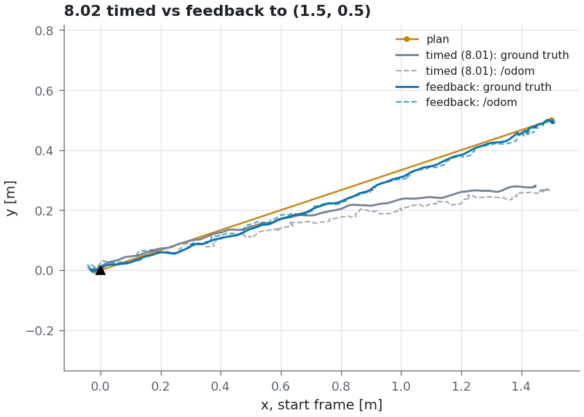
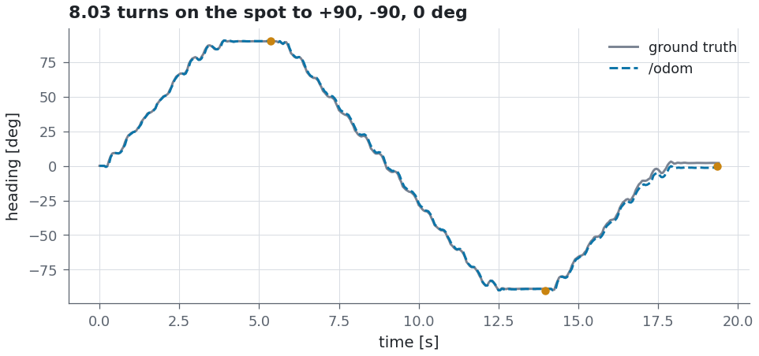
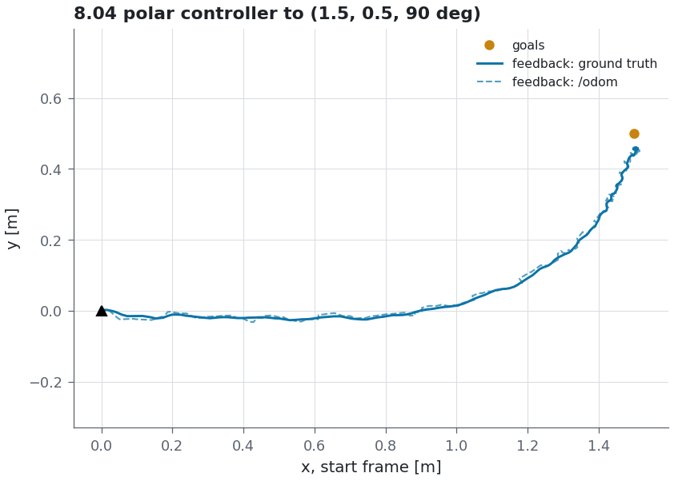
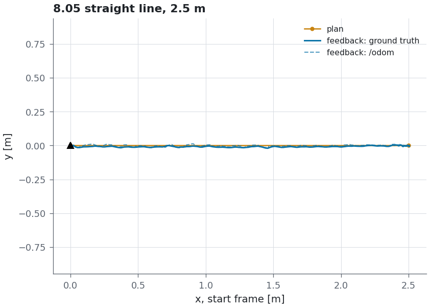
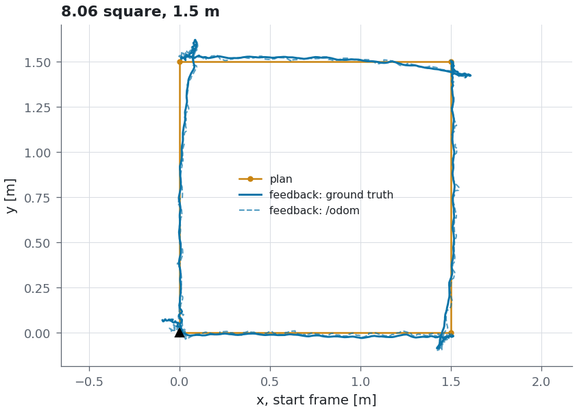
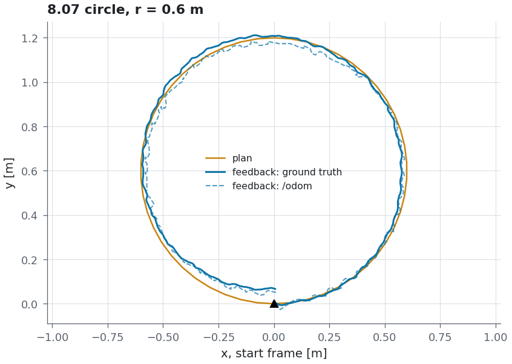
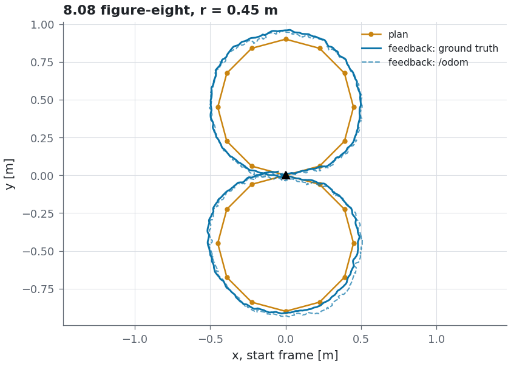
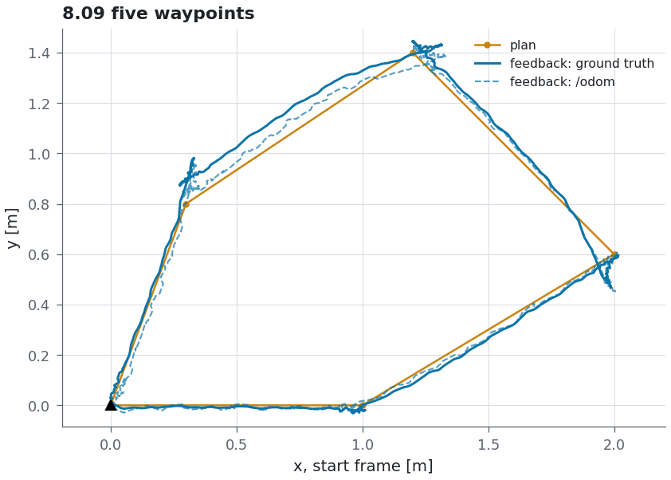
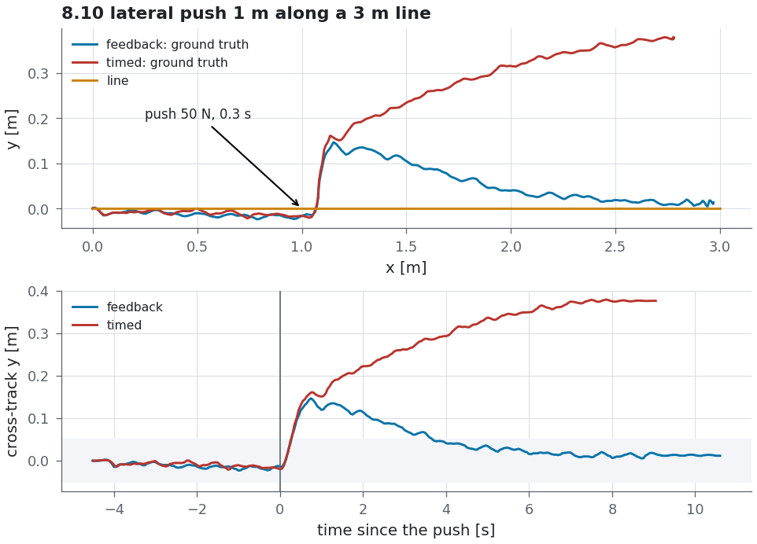
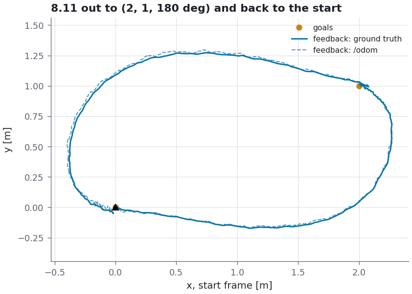

Move it · Stage 8 tasks
Feedback movement
At the end of this stage the Go2 reaches a point, a heading and a pose, walks a line, a square, a circle, a figure-eight and a
list of waypoints, and gets back onto its line after a sideways push. Returning to the start pose (8.11) failed on the
last run: the position was within 0.10 m, but the heading was 10.1 deg off because /odom yaw drifted. Every controller closes
the loop on /odom (the lidar-inertial odometry and EKF from chapter 9), and every
error below is measured on /odom_gt, the simulator's ground truth, in the start frame of the run (origin at the true start
pose, x forward, y to the left).
The controllers are not new. The timed schedules and the carrot follower come from
project 3 (shapes.py), the polar go-to-pose law from
project 4 (polar.py). This stage imports them and adds the missing pieces: a
heading controller, a circle tracker, a pose sequence, the push, and one acceptance test per task.
Run everything:
cd go2-nav-sim
source env.sh
cd tasks/s08_feedback-movement
python3 -m pytest -q tests # 5 passed: every plan on a perfect robot, no simulator
python3 run.py all # 14.4 min measured; restarts Gazebo and the estimator before each run
run.py <id> runs one task. Before each run it stops the stack (scripts/stop.sh), starts sim.launch.py with
worlds/arena_overhead.world (the arena plus a camera above the 8.10 line) and estimation.launch.py, and waits until
the lidar odometry prints its first pose. The robot then starts on marker A facing +x with /odom at zero. Nav2 is not
started. run.py <id> --keep uses the stack that is already running; run.py <id> --rescore scores and draws the logged
results/<id>.csv again without the simulator. Thresholds are in acceptance.json, written before the first run.
| Task | Capability | Status | Key number (ground truth) | Where |
|---|---|---|---|---|
| 8.01 | reach a point with timed commands | verified | 0.228 m from the point | run.py 8.01 |
| 8.02 | the same point with odometry feedback | verified | 0.006 m | run.py 8.02, p03 Follower |
| 8.03 | target orientation | verified | 2.05 deg worst of three | motion.Headings |
| 8.04 | target pose | verified | 0.042 m, -5.2 deg | p04 GoToPose |
| 8.05 | straight line | verified | 0.020 m largest cross-track | p03 Follower |
| 8.06 | square | verified | 0.023 m worst corner | p03 Follower |
| 8.07 | circle | verified | 0.023 m RMS radial | motion.Circle |
| 8.08 | figure-eight | verified | 0.060 m at the crossing | p03 Follower, p03 points |
| 8.09 | waypoints | verified | 0.081 m worst of five | p03 Follower |
| 8.10 | correction after a push | verified | back within 0.05 m in 3.65 s; timed run ends 0.38 m off | run.py 8.10 |
| 8.11 | return to start | failed | 0.052 m, -10.1 deg (limit 6 deg) | p04 GoToPose |
Every number is from one python3 run.py all on one machine with other simulations running (load average 39 to 68 on 32
cores, read with uptime at the start, middle and end). It took 14.4 min wall clock; 8.10 alone took 4.8 min: it
starts the stack twice, renders a video and may wait for the render lock. In project 4 two identical runs differed by 0.044 m in mean error, so single-run
differences of a few centimetres between tasks here are not meaningful. The run before this one gave a different worst case
for several tasks (for example 8.06: 0.081 m worst corner, 8.11: -3.2 deg); where that matters it is quoted below.
| File | What it does |
|---|---|
motion.py |
the plans of all tasks, the adapters around the p03 and p04 controllers, the scores; no ROS |
run.py |
starts the stack, drives one plan at 20 Hz of simulated time, logs /odom and /odom_gt, scores, draws |
acceptance.json |
the thresholds and where each one comes from |
params/push.yaml |
the 8.10 push: link, force, duration, where along the line |
bin/gzserver |
starts Gazebo with the force plugin that provides /apply_link_wrench |
worlds/arena_overhead.world |
the arena plus an overhead camera for the 8.10 video |
tests/test_motion.py |
every plan on a perfect robot |
8.01 Reach a point with timed commands verified
Objective. Send the robot to (1.5, 0.5) m with a fixed schedule of velocity commands and measure where it ends up.
Prerequisites. 4.05 (walk 1 m), 4.10 (turn on the spot), 7.13 (compare odometry with ground truth).
Theory. A timed command assumes the robot does exactly what it is told. Turn to the bearing, then walk the distance:
$$\theta = \operatorname{atan2}(0.5, 1.5) = 18.4^\circ,\quad T_\text{turn} = \theta/\omega,\qquad d = 1.58\ \text{m},\quad T_\text{walk} = d/v$$
with $\omega = 0.4$ rad/s and $v = 0.25$ m/s. If the robot walks at $v_a$ instead of $v$, it stops $(v - v_a)\,T_\text{walk}$ short; a heading error $\delta$ moves the end point sideways by about $d\,\delta$. Nothing in the program sees either.
Implementation. motion.timed_point() builds the schedule [(0.80 s, 0, 0.4, turn), (6.32 s, 0.25, 0, walk), (1.5 s, 0, 0, settle)],
played by motion.Timed with p03's shapes.command_at. run.py logs every tick to results/8.01.csv.
Execution. python3 run.py 8.01
Demonstration.

Measurement. End point (1.444, 0.279) m, 0.228 m from the target. Achieved speed during the walk 0.234 m/s for 0.25
commanded. Heading after the turn 15.6 deg (2.8 deg short); at the end 5.5 deg. /odom saw the same thing: it put the robot
0.238 m from the target.
Acceptance. final_pos_err_m <= 0.30 (baseline for 8.02). Measured 0.228 m: verified.
Failure analysis. Split along the path to (1.5, 0.5), the 0.228 m error is 0.123 m short and 0.192 m to the right. The speed shortfall predicts (0.25 - 0.234) × 6.32 = 0.10 m short. The sideways part comes from the heading: the turn stopped 2.8 deg short, and with zero turn rate commanded the heading fell from 15.6 to 5.5 deg during the walk, so the robot curved right. A timed plan cannot correct either. In the previous run the same split was 0.144 m short and 0.149 m right.
Next task. 8.02 runs the same target with feedback and must beat this number.
8.02 Reach the same point with odometry feedback verified
Objective. Reach (1.5, 0.5) m by steering on /odom until the estimate says the point is reached.
Prerequisites. 8.01, 7.12 (odometry and TF).
Theory. The carrot follower from project 3 projects the robot onto the leg from $p_0$ to the target $p_1$, puts a carrot $L = 0.4$ m further along the leg and steers at it:
$$s = (p - p_0)\cdot u,\quad c = p_0 + (s + L)\,u,\quad \omega = k_h\,\operatorname{wrap}(\operatorname{atan2}(c_y - y, c_x - x) - \psi)$$
It turns on the spot until the heading error is below 2 deg, walks while $|p_1 - p_0| - s > 0.02$ m, then stands 1.5 s.
Implementation. shapes.Follower([(1.5, 0.5)]), unchanged from p03. run.py converts /odom into the start frame
(motion.to_start) before each step.
Execution. python3 run.py 8.02 (needs results/8.01.json).
Demonstration. The figure under 8.01: the blue path ends on the target, the grey one short of it and to the right.
Measurement. 0.006 m from the target on ground truth, in 11.0 s (timed: 8.65 s). After standing 1.5 s, /odom put the
robot 0.014 m from the target and 0.009 m from where it really was.
Acceptance. final_pos_err_m <= 0.08 and better than 8.01. Measured 0.006 m against 0.228 m: verified.
Failure analysis. The remaining error is the estimate, not the controller: the controller stops at 0.02 m on /odom, and
/odom was 0.009 m off. Here the two partly cancelled. When the estimate drifts more (8.09) the true error grows with it.
Next task. The same follower walks lines, squares and waypoints (8.05, 8.06, 8.09).
8.03 Reach a target orientation verified
Objective. Turn on the spot to +90, -90 and 0 deg (relative to the start) and hold each heading.
Prerequisites. 8.02.
Theory. Proportional turn with a saturation and a floor, the turn law of p03's follower:
$$e_\psi = \operatorname{wrap}(\psi^* - \psi),\qquad \omega = \operatorname{sign}(e_\psi)\,\max\big(\omega_{\min},\ \min(\omega_{\max}, k\,|e_\psi|)\big)$$
with $k = 1.5$, $\omega_{\max} = 0.5$ rad/s, $\omega_{\min} = 0.12$ rad/s (a floor, so the last degrees do not crawl), stop at $|e_\psi| < 2^\circ$.
wrap keeps the error in $(-\pi, \pi]$, so the robot always turns the shorter way.
Implementation. motion.Headings, which reuses Follower._turn from p03.
Execution. python3 run.py 8.03
Demonstration.

Measurement. True heading errors after standing 1.5 s: -0.03, +1.12, +2.05 deg; on /odom: +0.17, +1.04, -1.31 deg.
Total 19.4 s. The trunk did not stay in place: after the three turns its centre was 0.12, 0.25 and 0.35 m from the start.
Acceptance. max_heading_err_deg <= 5.0. Measured 2.05 deg: verified.
Failure analysis. The worst true error (+2.05 deg at the 0 deg target) is mostly the estimate: /odom said -1.31 deg,
so its yaw was 3.4 deg off after three turns. The controller stopped inside its 2 deg tolerance each time. Position is the
larger problem: during a "turn on the spot" CHAMP's gait turns about a point that is not the trunk centre, so each turn moves the trunk 0.1 m or more.
Project 3 found the same. This is the error that shows up at the corners of 8.06 and 8.09 and in the final heading of 8.04.
Next task. 8.04 combines position and heading.
8.04 Reach a target pose verified
Objective. Reach (1.5, 0.5) m with heading 90 deg.
Prerequisites. 8.02, 8.03.
Theory. The polar controller of project 4:
$$\rho = |g - p|,\quad \alpha = \operatorname{wrap}(\operatorname{atan2}(g_y - y, g_x - x) - \psi),\quad \beta = \operatorname{wrap}(\psi_g - \psi - \alpha)$$ $$v = k_\rho \rho,\qquad \omega = k_\alpha \alpha + k_\beta \beta,\qquad (k_\rho, k_\alpha, k_\beta) = (0.5, 1.5, -0.5)$$
Inside 0.05 m it switches to the turn of 8.03 for the last part of the heading.
Implementation. motion.Poses([(1.5, 0.5, 90 deg)]) runs p04's polar.GoToPose and stands 1.5 s at the goal.
Execution. python3 run.py 8.04
Demonstration.

Measurement. 0.042 m and -5.2 deg from the goal pose, in 11.0 s. /odom said 0.047 m.
Acceptance. final_pos_err_m <= 0.10, |final_heading_err_deg| <= 6.0. Measured 0.042 m, -5.2 deg: verified.
Failure analysis. The drive phase ends at 0.05 m on /odom; the final turn on the spot then moves the trunk (8.03). The
heading error splits into -2.9 deg on /odom (the turn stops inside its 3 deg tolerance) and 2.3 deg by which the /odom
yaw was off at the end. Both parts have the same sign here, so the total is close to the 6 deg limit.
Next task. 8.11 uses the same controller for a round trip.
8.05 Walk a straight line verified
Objective. Walk 2.5 m along x and stay on the line.
Prerequisites. 8.02.
Theory. For a line along x the carrot gives a heading command of about $-\arctan(y/L)$. For small errors $\dot y = v \sin\psi \approx -v\,y/L$, so a sideways offset decays with time constant $L/v = 0.4/0.25 = 1.6$ s.
Implementation. shapes.Follower([(2.5, 0)]).
Execution. python3 run.py 8.05
Demonstration.

Measurement. Largest cross-track error 0.020 m; the robot stopped 0.003 m past the end; 13.2 s.
Acceptance. max_cross_track_m <= 0.05, |final_along_err_m| <= 0.08. Measured 0.020 m, +0.003 m: verified.
Failure analysis. Nothing failed. The cross-track error stayed between -0.020 and +0.004 m for the whole line.
Next task. 8.10 pushes the robot off this kind of line.
8.06 Walk a square verified
Objective. Walk a 1.5 m square counter-clockwise, stopping at each corner, and end facing the start heading.
Prerequisites. 8.03, 8.05.
Theory. Four legs of 8.05 with a turn of 8.03 between them. The error at a corner is the controller's error on
/odom plus the gap between /odom and the truth: $e_\text{true} \le e_\text{odom} + |p_\text{odom} - p_\text{true}|$.
Implementation. shapes.Follower(square_corners(), final_yaw=0): the closed-loop square of project 3
(step 3), imported, not copied.
Execution. python3 run.py 8.06
Demonstration.

Measurement. Corner errors on ground truth 0.021, 0.007, 0.023, 0.011 m. The same corners on /odom: 0.015, 0.008, 0.031,
0.043 m. The gap between /odom and the truth at the corners: 0.007, 0.001, 0.008, 0.038 m. Final heading 6.1 deg, 51.0 s.
Acceptance. max_corner_err_m <= 0.10. Measured 0.023 m: verified.
Failure analysis. The true corner error is the error on /odom plus the estimator gap. In this run the gap stayed under
0.04 m, and at the last corner the two partly cancelled (0.043 m on /odom, 0.011 m true). The run before had a gap that grew
corner by corner to 0.093 m and a worst corner of 0.081 m; project 3 measured 0.01 to 0.05 m. Better control will not
reduce the gap; a better estimate or an absolute fix (AMCL, stage 9) will.
Next task. 8.09 uses the same follower on arbitrary points.
8.07 Walk a circle verified
Objective. Walk one counter-clockwise circle of radius 0.6 m through the start.
Prerequisites. 8.05.
Theory. A circle needs a turn rate all the time, so feedback alone lags. Feed the curvature forward and correct the radial error $e = |p - c| - r$ and the heading error to the tangent $\theta_e$:
$$\omega = \frac{v}{r} + k_e\,v\,e + k_h\,\theta_e$$
Linearised, $\ddot e + k_h \dot e + k_e v^2 e = 0$; with $v = 0.18$ m/s, $k_e = 10$, $k_h = 1.5$ that is $\omega_n = 0.57$ rad/s and $\zeta = 1.3$. If the robot walks at $v_a < v$ but turns as commanded, the proportional term needs a steady error $e = -(1 - v_a/v)/(k_e r)$ to keep the radius (my estimate). With $v_a = 0.94\,v$ (8.01, 0.234 for 0.25 m/s) that is $-0.011$ m.
Implementation. motion.Circle (new, 20 lines). The p03 follower on circle points was the first plan: on a perfect
robot it was up to 0.056 m off the circle, because the 0.25 m lookahead is longer than the 0.16 m legs. The tracker
above stays within 0.005 m on the same perfect robot (tests/test_motion.py).
Execution. python3 run.py 8.07
Demonstration.

Measurement. Radial error RMS 0.023 m, largest 0.072 m, mean -0.010 m (inside the circle); end 0.067 m from the start; 24.1 s.
Acceptance. rms_radial_err_m <= 0.05, max_radial_err_m <= 0.10, final_pos_err_m <= 0.10. Measured 0.023, 0.072,
0.067 m: verified.
Failure analysis. The mean -0.010 m is the steady error of a proportional law, close to the -0.011 m predicted from the speed shortfall. An integral term on $e$ would remove it.
Next task. 8.08 joins two circles.
8.08 Walk a figure-eight verified
Objective. Walk two circles of radius 0.45 m that touch at the start, left one counter-clockwise, right one clockwise.
Prerequisites. 8.05, 8.07.
Theory. As in project 3, step 5:
24 points, one every 30 deg, followed at 0.18 m/s without stopping. The crossing error is the distance from the start after
the first lobe (the last point labelled walk11).
Implementation. shapes.Follower(figure8_points(), stop_each=False, v=0.18, lookahead=0.25, reach_tol=0.05), the
arguments of p03's drive.py figure8 closed.
Execution. python3 run.py 8.08
Demonstration.

The video of the same controller is in project 3 (projects/p03_move-in-shapes/media/figure8_closed.mp4).
Measurement. Crossing 0.060 m, end 0.056 m from the start, end heading 6.1 deg, 40.3 s. Project 3's run: 0.07 and 0.05 m.
Acceptance. crossing_err_m <= 0.10, final_pos_err_m <= 0.10. Measured 0.060, 0.056 m: verified.
Failure analysis. There is no final turn, so the end heading is whatever the last leg left (p03 saw 2 to 11 deg). Both position errors are within 0.01 m of p03's; with single runs that difference is not meaningful.
Next task. 8.09.
8.09 Follow waypoints verified
Objective. Visit (1.0, 0), (2.0, 0.6), (1.2, 1.4), (0.3, 0.8) and (0, 0) in order, stopping at each.
Prerequisites. 8.06.
Theory. As 8.06, with legs of different length and direction.
Implementation. shapes.Follower(WAYPOINTS); the waypoints are in motion.py.
Execution. python3 run.py 8.09
Demonstration.

Measurement. Errors at the five waypoints 0.021, 0.016, 0.043, 0.081, 0.028 m on ground truth and 0.007, 0.019, 0.024,
0.032, 0.030 m on /odom; gap between the two 0.023, 0.003, 0.019, 0.050, 0.003 m. 50.3 s.
Acceptance. max_waypoint_err_m <= 0.10 and all five reached. Measured 0.081 m, 5 of 5: verified.
Failure analysis. Same split as 8.06: the worst waypoint (0.081 m) is where /odom was 0.050 m off. The spikes at the
waypoints in the figure are the turns on the spot after each stop: the trunk moved 0.051, 0.124, 0.114 and 0.106 m during
the four turns, which is why the errors are taken at the end of the stop, before the turn.
Next task. Stage 10 sends waypoints through Nav2 instead (10.12).
8.10 Correct after a disturbance verified
Objective. Push the walking robot sideways and show that feedback brings it back onto its line, and that timed commands do not.
Prerequisites. 8.05.
Theory. A force $F$ for $\Delta t$ gives the robot an impulse $J = F\,\Delta t$. With $F = 50$ N, $\Delta t = 0.3$ s and
$m = 15.1$ kg (sum of the link masses, gz model -m go2 -i), $\Delta v \le J/m = 1.0$ m/s; the feet take part of it. After
the push the follower of 8.05 sees a cross-track error and returns with time constant $L/v = 1.6$ s. A timed plan has no
error signal: whatever heading the push leaves, it keeps walking along.
Implementation. run.py walks 3 m along x twice, once with the follower and once with the timed schedule
(12 s at 0.25 m/s). When /odom says x > 1.0 m it calls the Gazebo force plugin:
ros2 service call /apply_link_wrench gazebo_msgs/srv/ApplyLinkWrench \
"{link_name: 'go2::base_link', wrench: {force: {y: 50.0}}, start_time: {sec: <now + 0.05 s>}, duration: {nanosec: 300000000}}"
ROS 1 called this service apply_body_wrench; in ROS 2 it is apply_link_wrench, and it exists only when gzserver loads
libgazebo_ros_force_system.so. bin/gzserver adds that plugin, and run.py puts bin/ first on PATH for the launch.
The video is recorded with projects/p03_move-in-shapes/record.py, which is projects/common/record_cam.py with a reliable
subscription instead of best effort. On a loaded machine the best-effort recorder loses most of the large camera images
(project 3 counted 2 frames in 60 s); the reliable one has them resent.
Execution. python3 run.py 8.10 (renders a video; on a shared machine it waits for /tmp/go2_render.lock).
Demonstration.
Overhead camera, feedback run, real speed (18 s): the robot is pushed up the image at 1 m and walks back to its line.

Measurement. Feedback run: largest deviation 0.147 m, back inside 0.05 m 3.65 s after the push and stayed there, 0.012 m
off the line at the end, no fall (trunk height never below 0.203 m; standing height 0.216 m). /odom was up to 0.082 m from
the truth after the push. Timed run: 0.379 m largest deviation, 0.376 m at the end. Its true heading, averaged over the logged
20 Hz rows, was -0.9 deg in the 0.5 s before the push and 12.7 deg from 0.5 to 1.5 s after it.
Acceptance. Push deviation at least 0.10 m, recovery within 6.0 s, final cross-track at most 0.05 m, no fall, timed run at least 0.10 m off. Measured 0.147 m, 3.65 s, 0.012 m, no fall, 0.376 m: verified.
Failure analysis. The push turned the trunk as well as moving it, so the timed run walked off at an angle and the error
grew for the rest of the line. The feedback run came back more slowly than the linear model says: 1.7 s from 0.147 to
0.05 m predicted ($1.6 \ln 2.94$), 3.65 s measured. Part of the delay is the estimate. From 1.5 s to 6 s after the push
/odom put the robot 0.02 to 0.045 m closer to the line than it was (true y 0.114, 0.072, 0.034, 0.006 m at 2, 3, 5, 8 s;
/odom 0.085, 0.046, 0.009, 0.007 m), so the follower saw a smaller error than there was. Part is the control: on /odom
the robot was back within 0.05 m after 2.95 s, against 1.5 s predicted from its 0.128 m peak on /odom. In the previous run
the gap after 1 s stayed under 0.05 m and recovery took 5.0 s, so the split between the two varies from run to run.
The first try of the push did nothing: with
start_time left at 0, the plugin answered success=True and applied no force (five calls of 50 to 400 N for 0.3 to 1.0 s
moved the standing robot by at most 2 mm); with duration -1 (forever) it worked. Setting start_time to the current simulated time fixed it.
Next task. 8.11; and stage 5 (5.16, recover from a small push while standing).
8.11 Return to the start failed
Objective. Go out to (2.0, 1.0) m facing 180 deg, then back to the start pose.
Prerequisites. 8.04.
Theory. The controller can only return to where /odom says the start is. The true return error is the control error
on /odom plus the drift of /odom over the round trip; the controller cannot see the second part.
Implementation. motion.Poses([(2.0, 1.0, 180 deg), (0, 0, 0)]) with p04's GoToPose.
Execution. python3 run.py 8.11
Demonstration.

Measurement. Back at 0.052 m and -10.1 deg from the true start pose after 35.4 s and 7.1 m of trunk path. At the end
/odom was 0.033 m from the truth in position and its yaw 8.2 deg off (-1.9 deg on /odom, -10.1 deg true). At the first
goal the error was 0.069 m, and the /odom yaw was already 3.8 deg off.
Acceptance. final_pos_err_m <= 0.10, |final_heading_err_deg| <= 6.0. Measured 0.052 m, -10.1 deg: failed on
heading. The run before this one measured 0.076 m, -3.2 deg and passed; the threshold stays at 6 deg.
Failure analysis. The controller did its part: it stopped 1.9 deg from the goal heading on /odom, inside its 3 deg
tolerance. The other 8.2 deg is /odom yaw drift over the two 180 deg turns and 7.1 m of walking, which no controller on
/odom can see. Position was within the limit (0.052 m) because the position drift was small this time (0.033 m); in the
previous run it was the other way round (0.074 m position drift, -3.2 deg). Project 4 measured 0.081 m and -5.4 deg after
10.7 m. Removing the drift needs an absolute reference: AMCL on the map (stage 9) or loop closure.
Next task. 9.08 and 9.09 localise against the map, which bounds this drift.